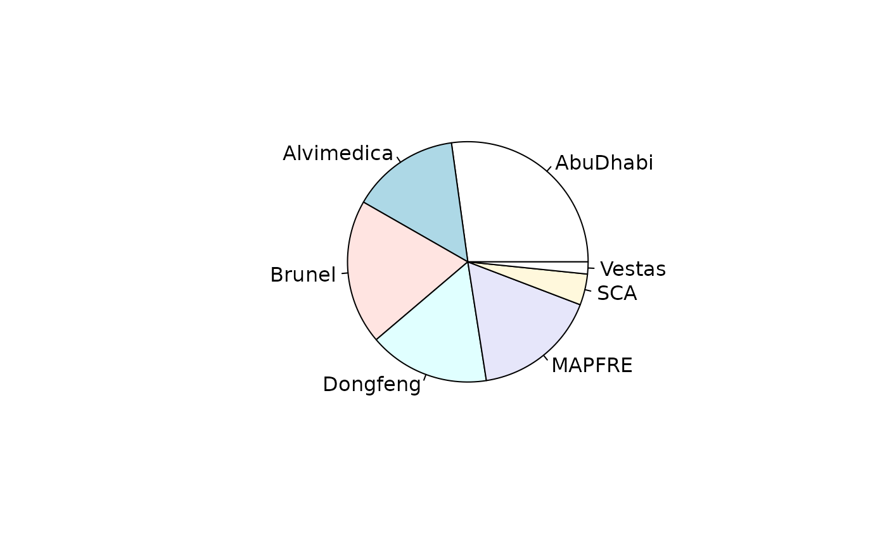

volvo.RdRace results from the twelfth edition of the round-the-world Volvo Ocean Race.
data(volvo)A hyper2 object that gives a likelihood function
Object volvo is a hyper2 object that gives a likelihood
function for the strengths of the competitors of the 2014-2015 Volvo
Ocean Race; volvo_maxp is a precomputed maximum likelihood
estimate of the competitors' strengths. Object volvo_table is a
data frame with rows being teams and columns being legs.
These objects can be generated by running script inst/volvo.Rmd,
which includes some further discussion and technical documentation and
creates file volvo.rda which resides in the data/
directory.
Wikipedia contributors, 2019. “2014-2015 Volvo Ocean Race”. In Wikipedia, the free encyclopedia. Retrieved 22:21, February 28, 2020. https://en.wikipedia.org/w/index.php?title=2014%E2%80%932015_Volvo_Ocean_Race&oldid=914916131,
pie(volvo_maxp)

# equalp.test(volvo) # takes ~10 seconds to run
# convert table to a support function:
suppfun(volvo_table, noscore = c("DNF", "DNS"))
#> log(AbuDhabi^9 * (AbuDhabi + Alvimedica + Brunel + Dongfeng +
#> MAPFRE)^-1 * (AbuDhabi + Alvimedica + Brunel + Dongfeng + MAPFRE + SCA
#> + Vestas)^-9 * (AbuDhabi + Alvimedica + Brunel + Dongfeng + MAPFRE +
#> Vestas)^-1 * (AbuDhabi + Alvimedica + Brunel + Dongfeng + SCA +
#> Vestas)^-1 * (AbuDhabi + Alvimedica + Brunel + MAPFRE + SCA +
#> Vestas)^-2 * (AbuDhabi + Alvimedica + Dongfeng + MAPFRE + SCA +
#> Vestas)^-2 * (AbuDhabi + Alvimedica + Dongfeng + SCA + Vestas)^-1 *
#> (AbuDhabi + Alvimedica + MAPFRE + SCA + Vestas)^-1 * (AbuDhabi + Brunel
#> + Dongfeng + MAPFRE + SCA + Vestas)^-1 * (AbuDhabi + Dongfeng + MAPFRE
#> + SCA + Vestas)^-1 * (AbuDhabi + Dongfeng + SCA + Vestas)^-2 *
#> (AbuDhabi + SCA + Vestas)^-2 * Alvimedica^9 * (Alvimedica + Brunel +
#> Dongfeng)^-1 * (Alvimedica + Brunel + Dongfeng + MAPFRE)^-1 *
#> (Alvimedica + Brunel + Dongfeng + MAPFRE + SCA + Vestas)^-2 *
#> (Alvimedica + Brunel + Dongfeng + SCA + Vestas)^-2 * (Alvimedica +
#> Brunel + MAPFRE + SCA + Vestas)^-3 * (Alvimedica + Brunel + SCA +
#> Vestas)^-1 * (Alvimedica + Dongfeng)^-1 * (Alvimedica + MAPFRE +
#> SCA)^-1 * (Alvimedica + MAPFRE + SCA + Vestas)^-3 * (Alvimedica + SCA +
#> Vestas)^-2 * Brunel^9 * (Brunel + Dongfeng + SCA + Vestas)^-1 * (Brunel
#> + MAPFRE + SCA + Vestas)^-1 * (Brunel + SCA + Vestas)^-2 * Dongfeng^7 *
#> (Dongfeng + SCA + Vestas)^-1 * MAPFRE^8 * (MAPFRE + SCA)^-1 * SCA^8 *
#> (SCA + Vestas)^-6 * Vestas^3)